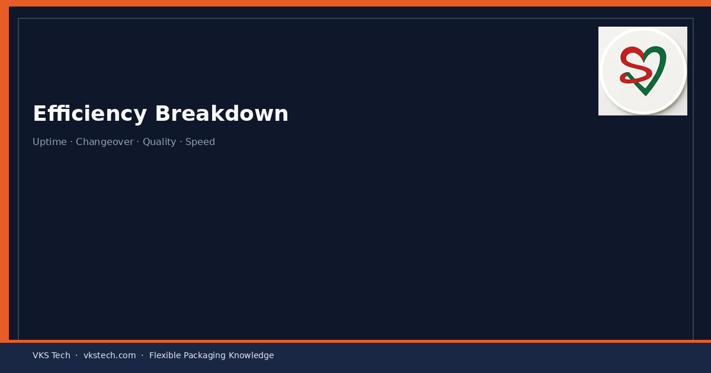
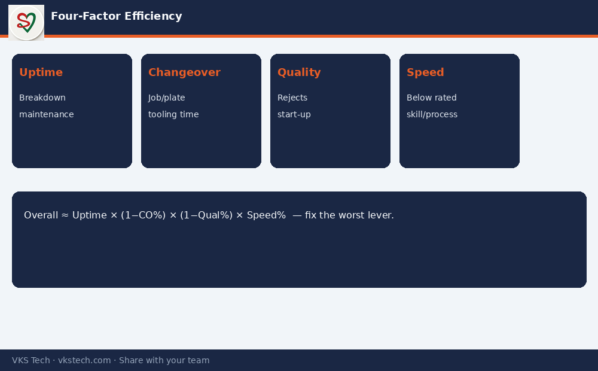

⚙️ “We Run at 75% Efficiency” Means Nothing Until You Break It into Uptime, Changeover, Quality and Speed.
📖 11-min read · Efficiency · PPC + Production Heads
Most converting plants quote one efficiency number. That number mixes four completely different losses. Until you separate them, you cannot improve the right one.
📌 Four-Factor Model
- Uptime / Availability — breakdowns, maintenance, power cuts
- Changeover loss — job change, plate/cylinder, cleaning, tooling
- Quality / reject loss — registration, colour, defects, start-up waste
- Speed efficiency — running below rated speed due to process or skill
Overall ≈ Uptime × (1 − Changeover%) × (1 − Quality%) × Speed%

Why This Matters
A plant at 92% uptime, 12% changeover loss, 5% quality loss and 88% speed lands near 68% overall. Improving only “speed” will not fix a changeover problem. PPC must know which lever is the real bottleneck this month.
💡 Meeting rule: Never accept a single efficiency number without the four components. The component that is worst gets the improvement project.
Next → Roll Length & Changeover Time → Capacity
⚙️ “हम 75% एफिशिएंसी पर चलते हैं” तब तक बेमानी है जब तक आप इसे अपटाइम, चेंजओवर, क्वालिटी और स्पीड में न तोड़ें।
📖 11-मिनट पढ़ें · एफिशिएंसी · PPC + प्रोडक्शन हेड
📌 चार-कारक मॉडल
Overall ≈ Uptime × (1 − Changeover%) × (1 − Quality%) × Speed%
💡 मीटिंग नियम: चार घटकों के बिना एक एफिशिएंसी नंबर स्वीकार न करें।
अगला → रोल लेंथ और चेंजओवर → क्षमता